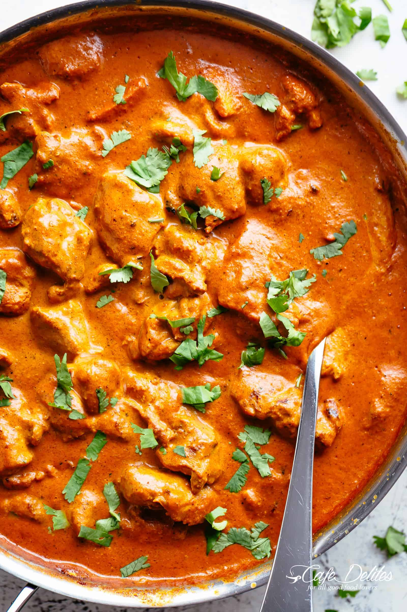

Chicken Tikka Masala

Description
Chicken Tikka Masala is a dish consisting of marinated chicken in a spiced curry sauce.
This dish was popularized by Indian cooks living in Great Britain. In fact, this dish is so popular in Great Britain
that it is considered Great Britain's National Dish.
Ingredients
For the marinade
- 4 pieces chicken thighs
- 1 cup plain yogurt
- 1.5 tablespoons minced garlic
- 1 tablespoon ginger
- 2 teaspoon garam masala
- 1 teaspoon turmeric
- 1 teaspoon ground cumin
- 1 teaspoon red chili powder
- 1 teaspoon salt
For the sauce
- 2 tablespoons of neutral oil
- 2 tablespoons of butter
- 1 large onion (finely diced)
- 1.5 tablespoons garlic (finely grated)
- 1 tablespoon ginger(finely grated)
- 1.5 teaspoons garam masala
- 1.5 teaspoons ground cumin
- 1 teaspoon turmeric
- 1 teaspoon ground coriander
- 14oz/400g tomato puree
- 2 teaspoon red chili powder
- 1 teaspoon salt
- 1.25 cups of heavy cream
- 1 teaspoon brown sugar
- water if needed
- fresh cilantro or coriander for garnish
Steps
- In a bowl, combine chicken with all of the ingredients for the marinade. let rest for at least 10 minutes, overnight is best
- Bake chicken in oven at 400 degreeds for 35 minutes
- Heat oil and butter over med-high heat. Fry onions until soft.(about 5 minutes)
- Add garlic and ginger, saute for 1 minute. Then add garam masala, cumin, turmeric, and coriander. Fry spices for about 20 seconds until fragrant
- Add tomato puree, chili powder, and salt. Simmer for 10-15 minutes
- Stir cream and sugar into the sauce. Add the chicken and its juices. Put more water if needed to achieve desired consistency
- Garnish and serve with rice/naan